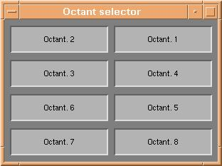
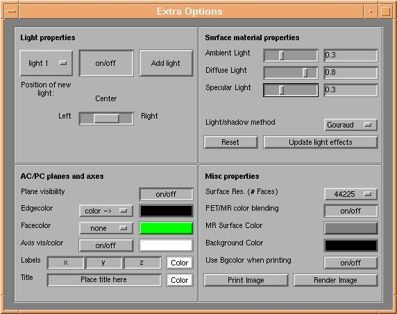

d3view Users tutorial (5): Rendering Parameters
The final rendered image consists of a number of 3d objects and a number
of light-sources. The parameters are controlled using 5 different windows:
- Octant origin
- Octant selector
- Loaded files
- Depth profile
- Extra Options
Features of each window are described below. When not otherwise stated, the 'Render Image' button of
either d3view command window or the "Extra Options" window must be pressed to reflect changes
made.
Octant origin
The octant origin window is brought up by clicking the "O. origin" button of the
d3view command window. The window selects the point of intersection between
the three axis-parallel planes, as described in section
3 of the tutorial. The functionallity of the octant origin window is fundamentally
the same as that of volView
Octant selector

The window is made visible by clicking the "O. selector" button of the d3view
command window. The 8 buttons selects visibility of the 8 parts of the brain surface,
as described in section 3 of the tutorial.
Loaded files

This window is always visible when datasets have been loaded, and contains information
on currently loaded datasets. Functionality differs slightly from anatomical to functional
datasets:
- MR dataset: The top line of user controls regards the anatomical dataset.
The leftmost text field contains the filename of the currently loaded anatomical
dataset. Right of this text field are controls to adjust the color and contrast
of the anatomical data. By clicking the colorbar, the colormap
menu is brought up for changing of the colormap used for rendering of
anatomical data. To enhance the contrast of the anatomical data, increase
the 'Min' field and decrease the 'Max' field. Anatomical data with value lower
than 'Min' are colored according to the 'Min' value and anatomical data with
value higher than 'Max' are colored according to the 'Max' value. The 'Reset'
button sets 'Min' and 'Max' to their original values. The two togglebuttons
'MR surface' and 'MR slices' selects if the brain surface and the slices should
be visible at all.
- PET datasets: Lines below the first line of the "Loaded files" window regard
activation datasets. Leftmost is a text field containing the filename of the
loaded dataset. The 'Min' and 'Max' values define which interval of the possible
values of the activation dataset will be visualized on the brain surface and
on slices, as described in section 4 of the
tutorial. NOTE: the 'Min' value should always be
changed slightly from its original value to allow visualisation of the underlying
anatomical data. The 'Reset' button sets 'Min' and 'Max' to their original
values. By clicking the colorbar, the colormap menu
is brought up for changing of the colormap used for rendering of the activation
dataset. The slider below the colorbar and the 'Thres' value define the threshold
value used when creating activation 'blobs' as described in section
4 of the tutorial. The color of the resulting blobs is taken from the
colorbar. The rightmost three buttons selects if surface, slice and blob activation
should be rendered during the next rendering process.
Depth profile

The "PET penetration depth" window is brought up by clicking the "Depth profile" button of the d3view command window.
The window is used to define how activation is projected onto the brain surface. From each point on the brain
surface, a number of steps defined by the "Penetration Steps" field are taken towards the centre of the dataset
volume. The steps are spaced evenly over a length in mm defined by the field "Penetration (mm)". At each of the
step points, a weight defined by the mathematical expression from the field "Depth function" is multiplied with
the activation value of that point, to finally give a weighted mean value of activation below the surface.
Extra Options

The "Extra Options" window is selected by clicking the "Extra Options" button of the d3view command window.
The window has 4 frames dealing which control different types of rendering parameters. The frames are
- Light properties: The controls in this frame regard light sources. The listbox at left selects which light
the user is adjusting (current light). The 'on/off' button selects if the current light is on or off. The
'Add light' button adds another light to the rendering, positioned according to the slider below the 'on/off'
button. Possible positions are 'Left', 'Center' and 'Right' with respect to the current view of the rendering
window. NOTE(1): One light is always added at the first rendering. NOTE(2):
Light properties are changed online. Pressing 'Render Image' is not needed.
- Surface material properties: The controls in this frame define how the objects (planes, slices, brain surface
and blobs) interact with the light from the light sources. Four parameters are important:
- Ambient Light: Defines a constant 0 < a < 1, which defines how light the rendering is overall.
- Diffuse Light: Defines a constant 0 < d < 1, which defines light/shadow contrast on the objects.
- Specular Light: Defines a constant 0 < s < 1, which defines how much light is reflected from the objects.
- Light/shadow method: Defines the interpolation method used when adding light to the objects. Possible values
are 'Flat', 'Gouraud' and 'Phong', with increasing calculations needed. 'Gouraud' is the default value, and is a sound
choice for most applications.
The 'Reset' button sets the 4 above parameters to their starting values. The 'Update light effects' button
updates light effects online - pressing 'Render Image' is not needed to change material properties of the objects.�
- AC/PC planes and axes: The controls of this frame adjust parameters of the 'AC/PC' planes (crossing
through (0,0,0), parameters of the draw axis, axis labels and title of the rendering. All parameters are
changed online - pressing 'Render Image' is not needed.
- AC/PC planes: 'Plane visibility' defines if AC/PC planes are visible
or not. Edge- and Facecolor can be chosen to be 'none' or 'color ->'
taken from the colorbox to the right. By clicking the colorboxes the color
selector appears for selection of an RGB color value.
- Axis properties: The 'on/off' button selects if the draw axis, axis
labels and title are visible or not. The colorbox to the right define
the background color of the draw axis, by bringing up a color
selector.
- Labels: Labels are set to the values in the three boxes, and label color
is selected by pressing the colorbox at right, bringing up a color
selector.
- Title: The plot title is taken from the textbox and the color is set
to the value defined by the colorbox on the right. Clicking the colorbox
will bring up a color selector.
- Misc properties:
The controls of this frame define so to speak "the rest" of the rendering parameters. The parameters are:
- Surface resolution: This listbox defines which of the surface models from the loaded anatomical dataset is
used. By default the lowest possible resolution is selected from the beginning, to minimize calculation needs.
TIP: Use a low resolution until you have adjusted all other parameters.�Next select a higher
resolution, press 'Render Image' and have cofee! :-)
- PET/MR color blending: Define if activation data on the slices are scaled in value by the underlying
anatomical data.
- MR Surface Color: Defines the base color of the brain surface. Pressing
the colorbox will bring up a color selector.
- Background Color Defines the background color of the rendering window.
Pressing the colorbox will bring up a color selector.
NOTE: This color is updated online - pressing 'Render
Image' is not needed.
- Use Bgcolor when printing: Defines wheter the background color of the render window is used when printing/saving
rendering output. Default is 'off';
The button 'Print Image' is used to save/print the output of your final rendering,
as explained in section 7 of the tutorial. The
button 'Render Image' updates all rendering parameters and bring up the Rendering
window.
Next tutorial item: Rendering
window